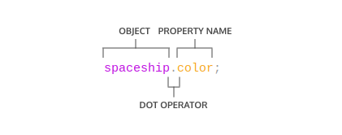
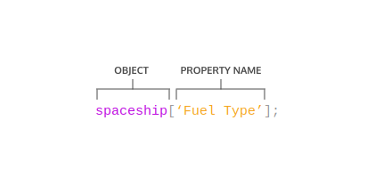
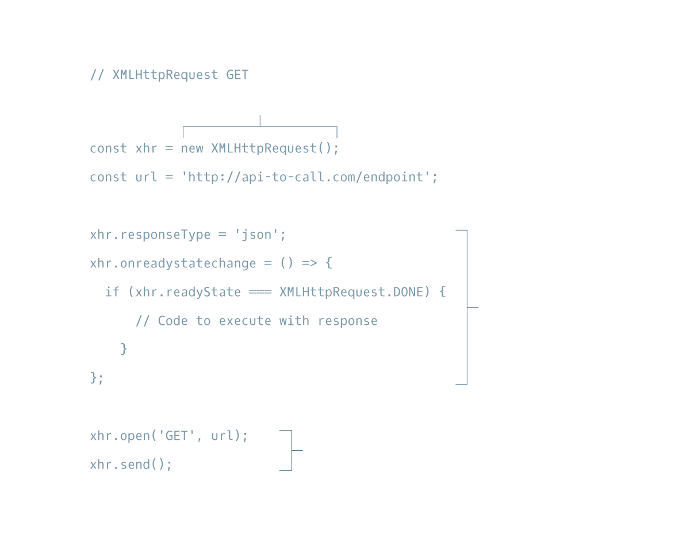

HTML+CSS+JavaScript
HTML
HTML简介
- 什么是HTML?
HTML 指的是超文本标记语言(HyperText Markup Language),是用来描述网页的一种语言。
- 大多数HTML元素包含开标签和闭标签，两者之间又包含纯文本或其他HTML标签。
- HTML元素能被嵌入其他标签，被包围的元素是外围父元素的孩子。
- 任何可见内容必须放在
<body>标签的开闭标签之间。 - 标题
<h1>到<h6>。 <p>(paragraph)，<span>与<div>(division)标签表示文本或块元素。<em>与<strong>用来强调文本。- 换行用
<br>(line break)标签。 <ol>(ordered lists)是有序表，<ul>(unordered lists)是无序表。<img>(images)与<video>(videos)分别连接图片与视频资源。
HTML文档标准
<!DOCTYPE html>需在html文件首行，告诉浏览器HTML的版本。<html>元素包含所有html代码。- 网页的信息，如标题等，定义在
<head>中。 - 网页的标题定义在head中的
<title>里。 - 网页的标题显示在浏览器的标签栏里。
<a>(anchor)标签用来连接外部网页，内部网页或者当前网页其他部分内容。- 可以通过
<a>结合id跳转到当前网页的其他部分。 - 通过空格和缩进增强可读性。
- 用
<!-- comment -->注释。 - 更多html标签参考Mozilla documentation。
HTML表格
- 用
<table>标签制作表格。 <tr>(table rows)添加表格行。<td>(table data)添加表格数据。<th>(table heading)添加行标题或列标题。colspan属性设置跨列单元格。rowspan属性设置跨行单元格。- 表格可分为三部分：头，主体，脚。
- 表头用
<thead>表示。(表格标题) - 主体用
<tbody>表示。(表头与数据) - 脚用
<tfoot>表示。(表格描述)
HTML表单
<form>表示表单。<form>的action属性设置表单提交到哪。<form>的method属性设置表单提交方式。<input>元素：type属性为"text"是单行文本输入框。type属性为"password"是密码输入框。type属性为"number"是数值输入框。type属性为"range"是滑动条。type属性为"checkbox"是复选框。type属性为"radio"是单选框。type属性为"list"搭配<datalist>可输入的下拉框。type属性为"submit"是提交表单按钮。
<select>是不可输入的下拉框，<option>设置选项。<datalist>是配合<input>使用的数据表，<option>设置选项。<textarea>是大的文本输入框。- 当表单被提交时，各个元素的
name与value会以name=value的形式成对发送。 placeholder属性可以设置提示信息，当用户键入或选中时消失。
HTML表单客户端校验
- 客户端校验发生在表单被送到服务端之前。
requried属性要求必须有输入，不可为空。min属性规定输入数值的最小值。max属性规定输入数值的最大值。maxlength属性规定文本输入长度的最大值。minlength属性规定文本输入长度的最小值。pattern属性要求输入匹配相应的正则式。- 如果表单校验不通过，用户会得到相应的提示信息。
含语义的HTML
- 含语义的HTML通过特定标签内包含特定内容的方式告诉页面其含义。
- 含语义的HTML是一种标准，使网页便于人们阅读，改善SEO。
<header>、<nav>、<main>、footer构成基本的网页结构。<section>定义文档同一主题下的元素，例如章节、标题、或文档的其他区域。<article>包含文章、博客、评论等内容。<aside>包含与主要内容相关，但对理解主要内容来说又不是必须的。<figure>用来包装各种类型的媒体资源。<figcaption>用来描述<figure>的标题。<video>、<embed>、<audio>用来打开媒体资源。
CSS
CSS的建立与选择器
- CSS(cascading style sheet)即层叠样式表能改变HTML元素的样式，CSS必须先选择HTML元素，然后将样式应用到所选元素上。
- CSS可通过标签名，类名，ID名选择HTML元素。
- 一个HTML元素可以有多个类名，用空格隔开。
- 类可以多次使用，ID只能有一个。
- 优先级：ID选择器>类选择器>元素选择器。
- 多个选择器可串联起来选择元素，这会提高它的优先级。(如div.classname，div#IDname)
- 内嵌元素可以通过后代选择器选择，即选择器间用空格隔开。
- 属性值加上
!important后优先级最高，几乎很难被覆盖。 - 多个选择器可共用同一样式代码，选择器间通过逗号隔开。
CSS规则
- CSS声明由属性与值组成。
font-family属性定义元素的字体。font-size控制文本的字体大小。font-weight定义文本字体粗细，通常有bold与normal两个值。text-align属性定义文本对齐方式，通常有left，right，center三种方式。- 文本有两种不同的颜色属性
color与background-color，color定义文本前景色，background-color定义文本背景色。 - CSS通过
opacity属性控制元素透明度，为1时是可见的、不透明，为0时是不可见的、透明的。 - CSS通过
background-image属性设置元素背景图片。
CSS盒模型
- 盒模型由内容，内边距，边框，外边距组成，如下图。

- 内容的宽和高以px或百分比为单位。
- 边框内包含内边距与内容区域。边框的粗细、样式、颜色可以通过CSS属性设置。
- 填充区(内边距)是内容与边框之间的区域，以px或百分比为单位。
- 外边距是边框外的区域。
- 水平上的外边距相加，总距离等于相邻元素的外边距相加。
- 垂直方向的外边距坍塌(合并)，总距离等于相邻元素中比较大的外边距，如下图。
margin: 0 auto使元素在父元素中水平居中，如果它有宽度的话。overflow属性可被设置成display、hide、scroll,规定该元素超出父元素后如何渲染。visibility属性可以隐藏或显示元素。visibility:hide与display:none不同于：visibility:hide元素只是不可见，所占空间还在，display:none元素不仅不可见，所占空间也被删除。
改变CSS盒模型
- 默认的盒模型中，长和宽是内容的长与宽，不包括边框与填充，盒的大小受到边框与填充的影响。如下图。

box-sizing属性控制浏览器的盒模型。box-sizing默认值为content-box。- 新的盒模型值为
border-box。 border-box中盒的大小不受边框与填充的影响。如下图。
CSS展示与定位
position属性允许通过三种方式定位元素，默认为static。position设为relative时，元素相对默认位置进行偏移，还在HTML文档流中。top- 元素顶部偏移距离，即元素向下移动距离。bottom- 元素底部偏移距离，即元素向上移动距离。left- 元素左部偏移距离，即元素向右移动距离right- 元素右部偏移距离，即元素向左移动距离
position设为absolute时，元素相对最近的父元素进行偏移，脱离HTML正常文档流。当页面滚动时，该元素会随之滚动。
position设为fixed时，元素会固定在页面的某一位置，不随页面滚动。z-index规定元素的层级，层级高的元素会覆盖其它层级低的元素，对static的元素不起作用。display属性设置元素为内联元素(inline)、块级元素(block)、内联块(inline-block)。inline元素占尽量小的空间，无法设置width与height属性。block元素占满容器的宽度，可以设置height属性。inline-block可以设置width与height属性，它们挤在一起，不占满容器宽度。float属性可使元素在页面的最左边或最右边。- 可以用
clear属性清除元素左边或右边或两边的浮动。left– 元素左边不允许接触容器中的其他元素。right– 元素右边不允许接触容器中的其他元素。both– 元素两边不允许接触容器中的其他元素。none– 元素两边允许其他元素。
CSS颜色
在CSS中一共四种设置颜色的方法：
- 颜色名–一共147种颜色名。
- 16进制表示颜色：
- 十六进制为0
9，剩下1015用A~F表示。 - 16进制颜色以
#开头，接上红绿蓝颜色值，如#23F41A。
- 十六进制为0
- RGB(red,green,blue)
- RGB颜色用
rgb()表示，三个参数依次表示红、绿、蓝的颜色值。 - RGB的范围从0到255，例如
rgb(7, 210, 50)。
- RGB颜色用
- HSL(hue,saturation,lightness)
- HSL分别表示色彩、饱和度、亮度。
- 色彩范围从0到360，饱和度与亮度用百分比表示，例如
hsl(200, 20%, 50%)。
- 可以在RGB与HSL中加上第四个值，
a(Alpha)透明度，范围从0到1。如rgba(7, 210, 50, 0.5)或hsla(200, 20%, 50%, 0.5)
CSS字体与排版
- 字体粗细用
font-weight设置，范围从100到900，值为100的倍数。400是默认值normal。700表示值bold。300表示值light。
font-style值为italic时字体倾斜。- 行间距可用行高
line-height设置。
- 有衬线字体(serif)字末端有细节，而无衬线字体(sans-serif)没有。
- 当用户计算机没有安装所选字体时，选用备用字体(Fallback fonts)。
- 可用
<link>在HTML中引入字体库，或用@font-face在CSS中引入字体库。 word-spacing用来设置词间距。letter-spacing用来设置字间距。text-align用来设置文本对齐方式。
CSS网格

- 容器元素需设置
display为grid; grid-template-columns定义网格的列数与列宽，声明时只列出列宽，有几个列宽表示有几列，特定单位fr表示可用空间的片段，若有n个片段，每个片段占1/n的长度。grid-template-rows定义网格的行数与行高，声明时只列出行高，有几个行高表示有几行。grid-template将grid-template-rows与grid-template-columns合并定义，用/隔开。grid-gap设置行间隙与列间隙。grid-row-start与grid-row-end设置元素横跨那些行，若横跨第4、5行，截至行为6。grid-column-start与grid-column-end设置元素横跨那些列。grid-area将grid-row-start、grid-column-start、grid-row-end与grid-column-end按顺序合并，用/隔开。
CSS网格进阶
grid-template-area可以设置网格区域及其名称。声明一个名称为一个区域，同一行的区域在同一双引号中。justify-items设置元素在网格中水平方向的对齐方式，在容器中设置。start–元素在网格中左对齐。end–元素在网格中右对齐。center–元素在网格中水平居中。stretch–元素水平拉伸充满网格，如果某一元素有特定的宽将不做拉伸。
justify-content设置网格在容器中水平方向的对齐方式，在容器中设置。start–网格在容器中左对齐。end–网格在容器中右对齐。center–网格在容器中水平居中。stretch–网格水平拉伸充满容器。space-around–水平方向上，用空白填充网格两边，会使网格间空白是边缘空白的两倍。space-between–水平方向上，用空白填充网格间隙，边缘没有空白。space-evenly–水平方向上，用空白均等地填充网格两边与边缘。
justify-self规定某一个元素的水平对齐方式，在元素中设置，值同justify-items。align-items设置元素在网格中垂直方向的对齐方式，在容器中设置，值与justify-items类似。align-content设置网格在容器中垂直方向的对齐方式，在容器中设置，值与justify-content类似。align-self规定某一个元素的垂直对齐方式，在元素中设置，值同align-items。grid-auto-rows设置自动添加的行的行高，增加网格可变性。grid-auto-columns设置自动添加的列的列宽，增加网格可变性。grid-auto-flow设置元素个数超出网格数时，网格自动添加的方式。row–自动添加行。(默认)column–自动添加列。dense(密集的)–如果有小块元素会通过算法填充到之前留下的洞中，可以与row、column搭配使用，例如grid-auto-flow: row dense;。
JavaScript
JavaScript简介
- 可用
console.log查看数据。 - 单行注释用
//，多行注释用/*与*/。 - JavaScript中有7种基本数据类型：strings(字符串)、numbers(数字)、booleans(布尔类型)、null(空)、undefined(未定义)、symbol(唯一标识)、object(对象)。
- 数字不需要引号：
23.8879。 - 字符串需要单引号或双引号：
Sample String。 - 内嵌的算术运算符有
+、-、*、/、%(取余)。 - 对象具有属性，查看属性用对象名+
.+属性名：'Hello'.length。 - 对象具有方法，调用方法通过对象名+
.+方法名+()：'hello'.toUpperCase()。 - JavaScript内嵌对象包括
Math等,是一些方法与属性的聚合体。
变量
变量储存程序中反复用的数据，通过变量名使用数据。
变量存储在内存中。
var是在ES6之前的版本中使用的关键词。let是更好的声明变量(可重新赋值)的方法，const是更好的声明常量(不可重新赋值)的方法。未初始化的变量值为
undefined。算术赋值：
+=、-=、*=、/=、++、--。+也用来联结字符串或字符串变量。在ES6中，模板字符串通过反引号
`与${}来插入值，例如：1
2
3const myPet = 'armadillo';
console.log(`I own a pet ${myPet}.`);
// Output: I own a pet armadillo.typeof用来返回数据类型(返回的是一个字符串)。
条件语句
if条件语句：当if条件为true时执行代码。if...else语句：当if条件为true时执行if代码块，为false时执行else代码块。- 可用
else if添加更多条件。 - 比较运算：
<、>、<=、>=、===(相等)、!==(不等)。 - 逻辑运算：
&&(与)、||(或)、!(非)。- 假值有
0，空字符串""或''，null，undefined，NaN。 - 可用短路求值(short-circuit evaluation)，例如
let defaultName = username || 'Stranger';。
- 假值有
- 三目运算符：判断条件
?条件为真时执行的代码:条件为假时执行的代码。 switch与case是另一种条件判断方式，每个case中需要break。
函数
函数声明：

带参数的函数声明：

调用函数：

ES6提供了参数默认值(default parameters)的声明：
1
2
3
4
5
6function greeting (name = 'stranger') {
console.log(`Hello, ${name}!`)
}
greeting('Nick') // Output: Hello, Nick!
greeting() // Output: Hello, stranger!设置函数返回值用
return语句。定义函数表达式：

箭头函数表示法：

通过箭头函数简化函数定义：
- 箭头函数中只有一个参数可省略括号，0个或多个参数不能省略。

- 箭头函数中代码块只有一行时可省略花括号与
return。
- 箭头函数中只有一个参数可省略括号，0个或多个参数不能省略。
作用域
- 作用域是一个程序中变量的作用范围。
- (代码)块是被花括号
{}包含的代码。 - 全局作用域是指变量在任何地方都有效。
- 全局变量是指在任何地方都有效的变量。
- 块作用域是指变量只在当前代码块有效。
- 本地变量是指只在当前代码块有效的变量。
- 全局命名空间是指存储全局作用域信息的空间。
- 作用域污染是指命名空间存储过多变量或者变量名重复使用。
数组
- 创建数组：
[]表示数组，数据项用,隔开。数组中可以存不同类型的数据。 - 下标从
0开始。 - 可以通过下标取得数据：
myArr[0]。 let与const分配的数组都可以改变数组中某项的值，但const不能重新分配新的数组，let可以。- 可通过
length属性获得数组长度。 .push()与.pop()方法分别添加与删除数组的最后一个元素。.unshift()与.shift()方法分别添加与删除数组的第一个元素。.slice()从数组中取出一些元素，不改变数组。- 数组在函数中被改变，在函数外也同样被改变。因为数组是作为引用传给函数的。
- 数组可嵌套其他数组：
1
2
3
4const nestedArr = [[1], [2, 3]];
console.log(nestedArr[1]); // Output: [2, 3]
console.log(nestedArr[1][0]); // Output: 2
循环
for循环：1
2
3for (let counter = 0; counter < 4; counter++) {
console.log(counter);
}while循环：1
2
3
4
5
6
7
8
9
10
11// A for loop that prints 1, 2, and 3
for (let counterOne = 1; counterOne < 4; counterOne++){
console.log(counterOne);
}
// A while loop that prints 1, 2, and 3
let counterTwo = 1;
while (counterTwo < 4) {
console.log(counterTwo);
counterTwo++;
}do...while循环：(至少执行一次代码)1
2
3
4
5
6
7let countString = '';
let i = 0;
do {
countString = countString + i;
i++;
} while (i < 5);break跳出循环。
高阶函数
- 函数可以被当作数据处理，可以赋予它新的值。
- Javascript函数也是对象(first-class objects)，所以它有属性与方法。
- 函数可作为参数传递给其他函数。
- 高价函数：参数是函数、返回值是函数、或者两者都有。
1
2
3
4
5
6
7
8
9
10const timeFuncRuntime = funcParameter => {
let t1 = Date.now();
funcParameter();
let t2 = Date.now();
return t2 - t1;
}
const addOneToOne = () => 1 + 1;
timeFuncRuntime(addOneToOne);
迭代器
.forEach()对数组中每个元素执行相同代码并返回undefined。.map()对数组中每个元素执行相同代码并返回新的数组，原数组不变。1
2
3
4
5
6
7
8const numbers = [1, 2, 3, 4, 5];
const bigNumbers = numbers.map(number => {
return number * 10;
});
console.log(numbers); // Output: [1, 2, 3, 4, 5]
console.log(bigNumbers); // Output: [10, 20, 30, 40, 50].filter()查看数组中每个元素，返回符合条件的数的数组。1
2
3
4
5
6
7
8const words = ['chair', 'music', 'pillow', 'brick', 'pen', 'door'];
const shortWords = words.filter(word => {
return word.length < 6;
});
console.log(words); // Output: ['chair', 'music', 'pillow', 'brick', 'pen', 'door'];
console.log(shortWords); // Output: ['chair', 'music', 'brick', 'pen', 'door'].findIndex()查看数组中每个元素，返回第一个符合条件的数的下标。如果没有就返回-1。1
2
3
4
5
6const jumbledNums = [123, 25, 78, 5, 9];
const lessThanTen = jumbledNums.findIndex(num => {
return num < 10;
});
console.log(lessThanTen); // Output: 3.reduce()查看数组中每个元素，返回一个值。1
2
3
4
5
6
7const numbers = [1, 2, 4, 10];
const summedNums = numbers.reduce((accumulator, currentValue) => {
return accumulator + currentValue
})
console.log(summedNums) // Output: 17
| Iteration | accumulator | currentValue | return value | ||
|---|---|---|---|---|---|
| First | 1 | 2 | 3 | ||
| Second | 3 | 4 | 7 | ||
| Third | 7 | 10 | 17 | ||
.reduce()的第二个参数可初始化accumulator： | |||||
|
| Iteration | accumulator | currentValue | return value |
|---|---|---|---|
| First | 100 | 1 | 101 |
| Second | 101 | 2 | 103 |
| Third | 103 | 4 | 107 |
| Fourth | 107 | 10 | 117 |
| 6. 迭代方法以回调函数为参数，回调函数需要提前定义，或者用函数表达式，或者箭头函数。 |
对象
对象是键值对的集合，每个键值对都是一个属性，当属性为函数时被称作方法。
一个对象字由包裹在花括号的逗号分隔的键值对组成。

可以通过点或方括号取得对象的属性。

可通过键值对(值为匿名表达式)或ES6的新语法为对象添加方法。
1
2
3
4
5
6
7
8
9
10
11const alienShip = {
invade: function () {
console.log('Hello! We have come to dominate your planet. Instead of Earth, it shall be called New Xaculon.')
}
};
const alienShip = {
invade () {
console.log('Hello! We have come to dominate your planet. Instead of Earth, it shall be called New Xaculon.')
}
};对象中可以嵌入对象。
对象是可变的，即使被声明为
const。对象通过引用传递，当我们在函数中改变了对象内容，这些改变时永久的。
可通过
For...in遍历对象。1
2
3
4// for...in
for (let crewMember in spaceship.crew) {
console.log(`${crewMember}: ${spaceship.crew[crewMember].name}`)
};
对象进阶
方法所属的对象称为调用对象，
this指调用对象，可被用来取得调用对象的属性。方法不会自动取得调用对象的其他内部属性。
this不能用在箭头函数中，因为箭头函数中的this指全局对象，而不是调用对象。JavaScript对象没有内嵌的私有属性，可在属性名前加
_表示私有属性，告诉其他开发者不能直接改变该属性。即使如此，它还是可以被直接改变。1
2
3
4
5const bankAccount = {
_amount: 1000
}
bankAccount._amount = 1000000;Setters与getter方法用来设置与取得属性值。
setter方法
1
2
3
4
5
6
7
8
9
10
11
12
13
14const person = {
_firstName: 'John',
_lastName: 'Doe',
get fullName() {
if (this._firstName && this._lastName){
return `${this._firstName} ${this._lastName}`;
} else {
return 'Missing a first name or a last name.';
}
}
}
// To call the getter method:
person.fullName; // 'John Doe'getter方法
1
2
3
4
5
6
7
8
9
10
11
12
13const person = {
_age: 37,
set age(newAge){
if (typeof newAge === 'number'){
this._age = newAge;
} else {
console.log('You must assign a number to age');
}
}
};
person.age = 40;
console.log(person._age); // Logs: 40
person.age = '40'; // Logs: You must assign a number to age
Factory(工厂)函数使我们能快速的创建多个对象实例。
1
2
3
4
5
6
7
8
9
10const monsterFactory = (name, age, energySource, catchPhrase) => {
return {
name: name,
age: age,
energySource: energySource,
scare() {
console.log(catchPhrase);
}
}
};对象的变形：
属性值简写：
1
2
3
4
5
6const monsterFactory = (name, age) => {
return {
name,
age
}
};变形赋值：
1
2
3
4
5
6//正常赋值
const residence = vampire.residence;
console.log(residence); // Prints 'Transylvania'
//变形赋值
const { residence } = vampire;
console.log(residence); // Prints 'Transylvania'
类
类是对象的模板。
JavaScript构造函数为
constructor()。继承使子类可以获得父类的属性与方法。
用
extends创建子类。用
super调用父类的construct()。1
2
3
4
5
6
7
8
9
10
11
12
13
14
15
16
17
18
19
20
21
22
23
24
25
26
27
28
29
30
31
32//父类
class Animal {
constructor(name) {
this._name = name;
this._behavior = 0;
}
get name() {
return this._name;
}
get behavior() {
return this._behavior;
}
incrementBehavior() {
this._behavior++;
}
}
//子类
class Cat extends Animal {
constructor(name, usesLitter) {
super(name);
this._usesLitter = usesLitter;
}
get usesLitter() {
return this._usesLitter;
}
}
//实例化
const bryceCat = new Cat('Bryce', false);用
static定义静态方法，只能用类名调用，不能实例化再调用。1
2
3
4
5
6
7
8
9
10
11
12
13
14
15
16
17
18
19
20
21
22
23
24
25class Animal {
constructor(name) {
this._name = name;
this._behavior = 0;
}
static generateName() {
const names = ['Angel', 'Spike', 'Buffy', 'Willow', 'Tara'];
const randomNumber = Math.floor(Math.random()*5);
return names[randomNumber];
}
}
//调用静态方法
console.log(Animal.generateName()); // returns a name
const tyson = new Animal('Tyson');
tyson.generateName(); // TypeError
```
### 浏览器兼容与转换
1. ES5--Javascript的老版本，所有浏览器都支持。
2. ES6--Javascript的新版本，部分浏览器不支持。语法更简洁，更具可读性，解决了一些ES5普遍的bug。
3. [caniuse](https://www.caniuse.com)--一个用来查找HTML、CSS、Javascript兼容信息的网站。
4. Babel--一个将ES6+代码转换成ES5的Javascript包。
5. `npm init`--建立**package.json**文件的终端命令，**package.json**是一个包含Javascript工程信息的文件。
6. `npm install`--安装节点包(Node package)的命令。
npm install babel-cli -D
npm install babel-preset-env -D
1 | 7. `babel-cli`--一个包含Babel命令行工具的节点包。 |
{
“presets”: [“env”]
}
1 | 10. `"build"`脚本--一个将ES6+代码转换成ES5的**package.json**脚本。 |
“build”: “babel src -d lib”
1 | 11. `npm run build`--一个执行"build"脚本ES6+代码转换成ES5的命令。 |
let Menu = {specialty:"Roasted Beet Burger with Mint Sauce"};
module.exports = Menu;
//另一形式：
module.exports ={specialty:"Roasted Beet Burger with Mint Sauce"};
1
* `require()`将模块导入。
const Menu = require('./menu.js'); function placeOrder() { console.log('My order is: ' + Menu.specialty); } placeOrder();1
2
2. ES6具有更灵活、简单的语法：
* 默认导出--`export default`可导出Javascript对象、函数与基本数据类型。
let Menu = {}; export default Menu;1
* 命名导出--`export`可为变量起别名再导出。
let specialty = ''; function isVegetarian() { }; function isLowSodium() { }; export { specialty, isVegetarian }; //或者： export let specialty = ''; export function isVegetarian() { }; function isLowSodium() { };1
* `as`为变量起别名。
export { specialty as chefsSpecial, isVegetarian as isVeg,isLowSodium };1
* `import`导入对象、函数或基本数据类型。
import Menu from './menu'; //命名导入： import { specialty, isVegetarian } from './menu'; ```Javascript Promise(承诺将来会执行)
- Promise是Javascript对象，代表一个异步操作的最终结果。
- Promise有三种状态：pending(待定)、resolved(解决)、rejected(拒绝)。
- 当Promise为resolved或rejected时是确定的(settled)。
- 我们通过关键字
new构建Promise对象，并向构建方法传递执行函数作为参数。 setTimeout()是一个Node函数，用事件循环(the event-loop)延迟回调函数的执行。.then()以成功处理时的回调函数为参数，包含Promise解决后所做的事。.catch()以失败处理时的回调函数为参数，包含Promise拒绝后所做的事。- 可以将
.then()与.catch()串联起来，用于处理有依赖关系的按顺序的多个任务。 - 为保证Promise组合的正确，每个
.then()中都要返回一个Promise。 - 串联Promise比内嵌Promise好。
- 同时执行多个异步操作用
Promise.all()，用于处理并行的多个任务。
ASYNC AWAIT(异步等待)
async...await是由Javascript promise生成的语法糖(通常来说使用语法糖能够增加程序的可读性，从而减少程序代码出错的机会)。- 我们用关键字
async声明异步函数。 - 在
async函数中我们用await暂停当前函数直到异步操作完成。 await返回Promise中的resolved value(解决值)。- 我们可以像同步语法一样用多个
await。 - 在
async函数中可用try...catch语句处理错误。 - 在
async函数中可用await Promise.all()处理并行异步操作。
Request I
- JavaScript是一种具有异步能力的网络语言。AJAX表示Asynchronous JavaScript and XML，是一种用来实现Javascript异步能力的工具。
- HTTP具有许多种请求方式，主要有GET与POST。
- GET方法只向其他来源请求信息。
- POST方法除了只向其他来源请求信息，还向其他来源传输信息。
- GET请求能用XMLHttpRequest对象与Javascript来写。
 - POST请求也能用XMLHttpRequest对象与Javascript来写。

- GET与POST请求需要用
new创建一个XHR对象，设置其responseType，创建一个函数处理响应对象(response)，以及打开(open)与发送(send)请求。 - 为了在URL末端添加查询字符串(query string)可用
?再添上参数。 - 为了提供多个参数，用
&隔开键值对，用=赋值。
Request II
- GET与POST请求有许多种创建方式。
fetch()与async/await是用来异步请求数据的函数。- fetch+GET

- fetch+POST
- async+await+GET
- async+await+POST

- fetch+GET
fetch()是个web API，用来创建request，fetch()返回一个Promise。- 我们可以串联
.then()来处理fetch()返回的Promise。 .json()方法将Promise转换为JSON对象。async用来创建返回Promise的函数。await用来告诉程序当Promise解决时再继续。await只在async函数中使用。